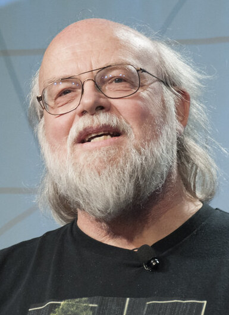

Введение
Джеймс Гослинг (англ. James Gosling) — канадский учёный-компьютерщик, автор объектно-ориентированного и кросс-платформенного языка программирования Java. Также известен как создатель оконной системы NeWS и Gosling Emacs, а также как один из разработчиков Star Seven.
Джеймс Гослинг родился 19 мая 1955 года в канадском городе Калгари. С детства он проявлял интерес к компьютерам и программированию. После окончания школы Гослинг поступил в Университет Калгари, где изучал информатику и математику. Во время учёбы он также занимался исследованиями в области компьютерной графики и создал несколько программных проектов. В 1983 году Гослинг получил степень доктора философии в информатике в университете Карнеги-Меллон в США. После этого он присоединился к исследовательской лаборатории фирмы Sun Microsystems. В Sun Microsystems Гослинг вскоре вошёл в состав Green Project: проекта, целью которого было придумывание новых разработок, которые помогут компании занять новую нишу на рынке. Изначально Гослинг хотел не создать новый язык, а модифицировать уже имеющийся С++ под электронные устройства. Но вскоре понял, что этот вариант всё-таки не подходит, нужно придумывать что-то новое. Так появился язык Java. Впервые он был выпущен в 1995 году вместе с браузером, написанным полностью на Java. Браузер не стал популярным, он скорее использовался для демонстрации возможностей языка, а вот сам Java тут же привлек внимание программистов по всему миру. Язык программирования Java стали использовать в широком спектре приложений — от веб-разработки до создания мобильных приложений. Гослинг является автором множества стандартов и спецификаций, связанных с языком Java, и считается одним из ведущих экспертов в области компиляции кода и виртуальных машин. Джеймс Гослинг награждён Орденом Канады, высшей гражданской наградой его родной страны.
Одна из самых сложных вещей в жизни — это выбор. Мне было трудно сказать «нет» множеству других отличных возможностей. Джеймс Гослинг